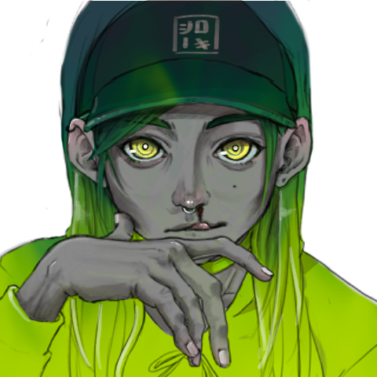

Roxanne Salge
Located in Kassel, Germany
I explore beauty in what is often perceived as unsettling. My work focuses on female mythological creatures,
the body, and transformation—where fascination meets discomfort.
I’m drawn to folklore, symbolism, and detailed ornamentation, and I want to reclaim “the grotesque”
as something powerful, tender, and visually compelling.
I’m Roxanne Salge, working under the name Rokimochi.
I’ve been influenced by Japanese visual culture since my early teens, when friends in my manga club
started calling me “Roki.”
The name later evolved into Rokimochi. “Kimochi” can describe feeling, sensation, or emotional state —
something deeply physical and intuitive. This idea strongly shapes my work:
I’m interested in how images can evoke attraction and discomfort at the same time,
how the body reacts before the mind explains.
Studying in Japan was a long-term goal and a formative experience that continues to inform my approach
across illustration, animation, and game creation.

Get in touch with me:
Selected Work
Japan Studies
Mythical Creatures
Game Creation